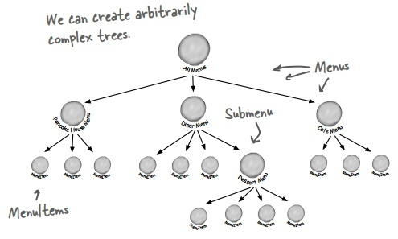
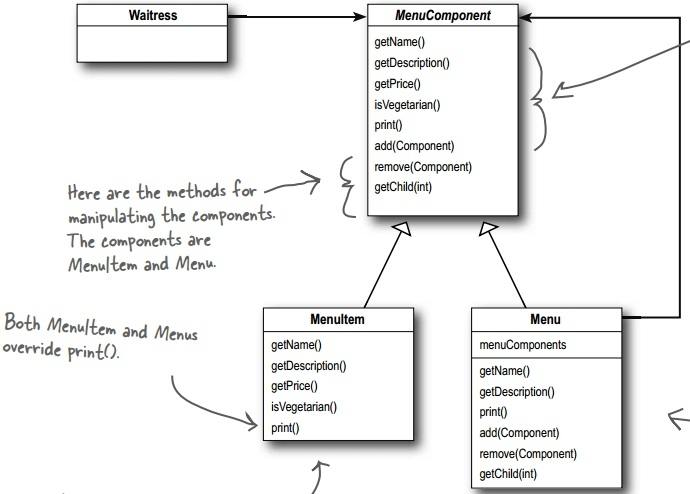
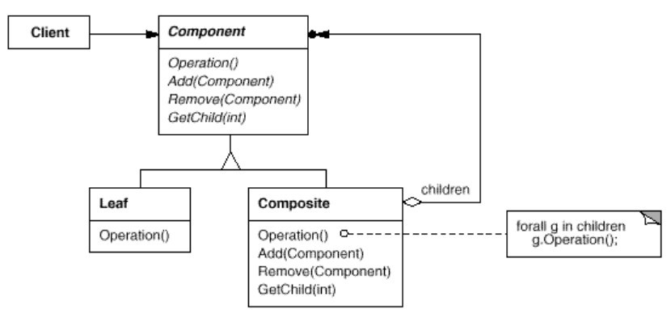
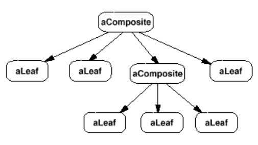

浅谈设计模式十二: 组合模式(Composite)
Table of Contents
实例
上节使用迭代器模式可以很方便访问各个菜单目录下的菜单，易易于菜单目录的扩展。但现在菜单目录下新增加了子菜单，比如 DinerMenu 下有
DessertMenu 的子菜单，那么如何更进一步改进我们的设计，新设计至少需要：
- 一种树状结构来包含菜单目录，子目录和菜单项。
- 遍历菜单目录里的每个菜单项如何迭代器一样方便。
- 遍历菜单更灵活。比如，只遍历Diner的desssert菜单，或遍历整个Diner菜单，包括dessert菜单。
组合模式(Composite)
目的
把对象组合成树状结构来表示部分-整体的层次结构。组合模式让用户能一致的对待单个对象和组合对象。
实现
组合模式能以树状的形式建立对象的结构，并同时包换对象的组合和单个对象作为树的节点。使用一个组合的结构，能对组合和单个对象使用同样的操作。也就是说，大多数情况下，我们能忽略对象组合和单个对象的区别。代码实例在这里 。基本的组合树状结构如下： 
按照下面组合模式的结构图具体实现。
- 定义构件接口
定义
MenuComponent构件类，为页节点（MenuItem）和组合节点（Menu）声明接口，并为它们实现默认的操作。class MenuComponent { public: virtual ~MenuComponent() { } virtual void add(MenuComponent *menu_component) { throw runtime_error("Unsupported Operation!"); } virtual void remove(MenuComponent *menu_component) { throw runtime_error("Unsupported Operation!"); } virtual MenuComponent* getChid(int i) const { throw runtime_error("Unsupported Operation!"); } virtual string name() const { throw runtime_error("Unsupported Operation!"); } virtual string description() const { throw runtime_error("Unsupported Operation!"); } virtual double price() const { throw runtime_error("Unsupported Operation!"); } virtual bool isVegetarian() const { throw runtime_error("Unsupported Operation!"); } virtual Iterator* createIterator() = 0; virtual void print() const { throw runtime_error("Unsupported Operation!"); } };
- 实现
MenuItem（页节点）- 菜单项直接打印自己的菜单项;
- 菜单项只有本身，不用遍历，返回空的迭代器实例。
class MenuItem : public MenuComponent { public: MenuItem(const string &name, const string &description, bool vegetarian, double price); virtual ~MenuItem(); string name() const { return name_; } string description() const { return description_; } double price() const { return price_; } bool isVegetarian() const { return vegetarian_; } void print() const; Iterator* createIterator(); private: string name_; string description_; bool vegetarian_; double price_; }; void MenuItem::print() const { cout << " " << name(); if (isVegetarian()) { cout << "(v)"; } cout << ", " << price() << endl; cout << " -- " << description() << endl; } Iterator* MenuItem::createIterator() { return new NullIterator(); }
- 实现
Menu（组合节点）Menu类和MenuItem类都继承于构件接口类，大部分相同，但Menu有子节点，实现getChild功能;Menu需要遍历所有它的子节点，实现创建组合迭代器;Menu打印所有它节点下的菜单项，包括自身的和所有子节点的。
class Menu : public MenuComponent { public: Menu(const string &name, const string &description); ~Menu(); virtual void add(MenuComponent *menu_component); virtual void remove(MenuComponent *menu_component); virtual MenuComponent* getChild(int i) const; virtual string name() const { return name_; } virtual string description() const { return description_; } virtual Iterator* createIterator(); virtual void print() const; private: string name_; string description_; vector<MenuComponent*> *menu_components_; }; MenuComponent* Menu::getChild(int i) const { if (i < 0 || i >= menu_components_->size()) { return NULL; } return menu_components_->at(i); } Iterator* Menu::createIterator() { return new Composite Iterator(new MenuIterator(menu_components_)); } void Menu::print() const { cout << endl << name(); cout << ", " << description() << endl; cout << "---------------------" << endl; for (int i = 0; i < menu_components_->size(); ++i) { MenuComponent *item = menu_components_->at(i); item->print(); } }
- 实现组合迭代器
组合迭代器
CompositeIterator继承于迭代器接口Iterator。组合迭起器实现起来更复杂，需要考虑树状结构的遍历，这里利用堆栈来保存组合节点，实现深度优先的遍历。class CompositeIterator : public Iterator { public: explicit CompositeIterator(Iterator *iterator); ~CompositeIterator(); virtual bool hasNext(); virtual void* next(); private: stack<Iterator*> *stack_; }; bool CompositeIterator::hasNext() { if (stack_->empty()) { return false; } else { Iterator *iterator = stack_->top(); if (!iterator->hasNext()) { stack_->pop(); delete iterator; return hasNext(); } else { return true; } } } void* CompositeIterator::next() { if (hasNext()) { Iterator *iterator = stack_->top(); MenuComponent *component = reinterpret_cast<MenuComponent*>(iterator->next()); if (typeid(*component) == typeid(Menu)) { stack_->push(component->createIterator()); } return component; } else { return NULL; } }
Waitress访问菜单Waitress打印菜单直接调用构件的打印功能;- 打印蔬菜菜单，利用组合迭代器遍历并判断蔬菜菜单
void Waitress::printMenu() { all_menus_->print(); } void Waitress::printVegetarianMenu() { Iterator *iterator = all_menus_->createIterator(); cout << "\nVEGETARIAN MENU\n----" << endl; while (iterator->hasNext()) { MenuComponent *menu_component = reinterpret_cast<MenuComponent *> (iterator->next()); try { if (menu_component->isVegetarian()) { menu_component->print(); } } catch (exception &ex) { } } delete iterator; }
- 组合菜单
用
MenuItem创建各个菜单项，把各个菜单目录组合只需用构件的add函数来完成，如下：MenuComponent *cafe_menu = new Menu("CAFE MENU", "Dinner"); MenuComponent *coffee_menu = new Menu("COFFEE MENU", "Stuff to go with your afternoon coffee"); cafe_menu->add(new MenuItem( "Burrito", "A large burrito, with whole pinto beans, salsa, guacamole", true, 4.29)); cafe_menu->add(coffee_menu); coffee_menu->add(new MenuItem( "Coffee Cake", "Crumbly cake topped with cinnamon and walnuts", true, 1.59));
- 总的设计框架

总结
组合模式(Composite)结构

一个典型组合对象结构类似如下图： 
组成
- 构件类（Component）
- 为组合模式中的对象声明接口。
- 适当的为所有类共有接口实现默认的行为。
- 声明一个接口来访问和管理它的子节点。
- （可选的）定义一个接口来访问一个构件在递归结构下的父元件，如果适当的话，并实现这个接口
- 树叶类（Leaf）
- 在组合模式中表示树叶类。一个树叶类没有子节点。
- 在组合模式中为基础对象定义行为。
- 客户（Client) 通过元件接口来操作组合模式中的对象。
应用场景
- 你想表示对象的部分-整体层次结构。
- 你想客户能够忽略对象组合和单个对象的区别。客户能一致的对待组合结构中的所有对象。
缺点
组合模式其中一个特性是：使得你的设计更具一般性。添加新构件很容易的缺点就是使得很难限制组合模式中的构件。有时你想要一个组合只有某些特性的元件，但是，使用组合模式，你不能依靠类型系统来实施这些限制，你不得不使用运行时检查。